Match thread R1: schedule and scoping
What shipped
| # | Item | State |
|---|---|---|
| 1, 2 | Drafts, plans and reviews are stamped with their match; Match Day lists every upcoming match | shipped |
| 3, 4 | Links from a match open the draft, plan or review prefilled and linked; prep counts only this match's work (Bo3 readout); earlier work is offered with "Use for this match" | shipped |
| 5 | Review from a real game: a picker on the review page, and "Review as a team" on a team game's match page | shipped |
| 9, 10 | Privacy and account audit (no stored-data sentence needed changing); ARCHITECTURE and CHANGELOG | shipped |
| 6, 7, 8 | Series on the match, RSVP, brief share link with migration v17 | R2 (stop rule, nothing half-built) |
Gates
CI on the tip cc88702 (run 39638849658): all five jobs green, 191/191 e2e, 0 flaky. Two real bugs were caught by CI during the round and fixed (a duplicate "Start a draft" link; the unknown-match line lost in hydration). The rubric harness measures only public pages, so the signed-in surfaces below were judged by the atelier alone.
Worth knowing
- The before frames are proxies: the closest M152 and M141 frames of the same pages. None of these M159 states existed before.
- The two atelier FIXes are resolved on the tip's frames, but the atelier has not re-read the new captures.
- A best of 3 counts a game as played only when a draft or review is stamped with it (G1 always counts). This is a react question on the card.
Match Day: upcoming matches (before → after) · PASS

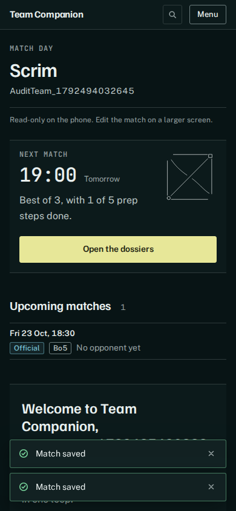
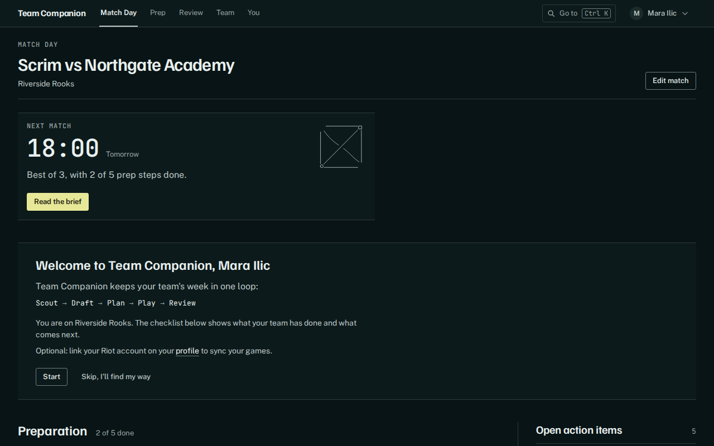
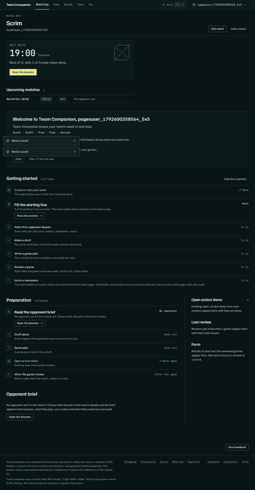
Match Day: Bo3 prep readout · FIX resolved in cc88702
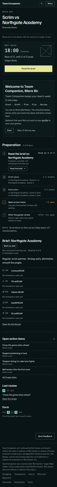
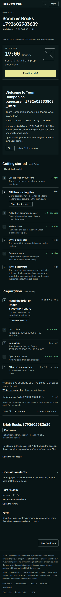
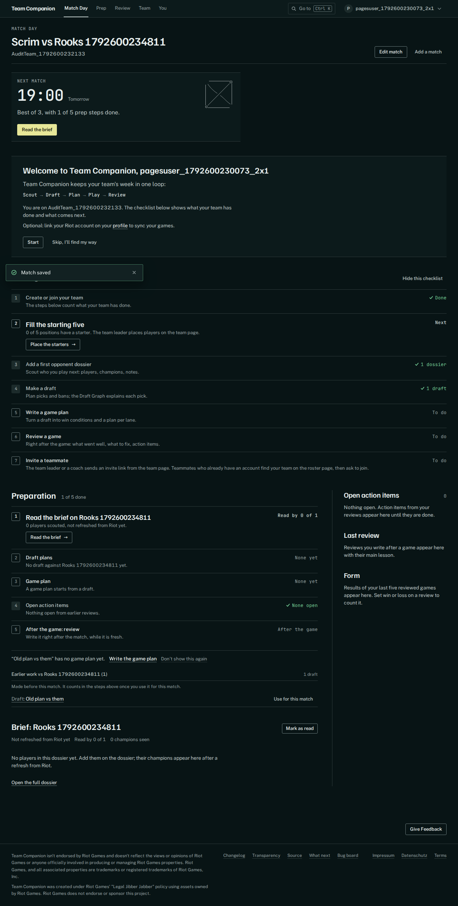
Draft opened from the match · FIX resolved in cc88702
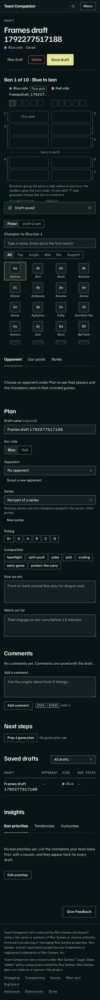
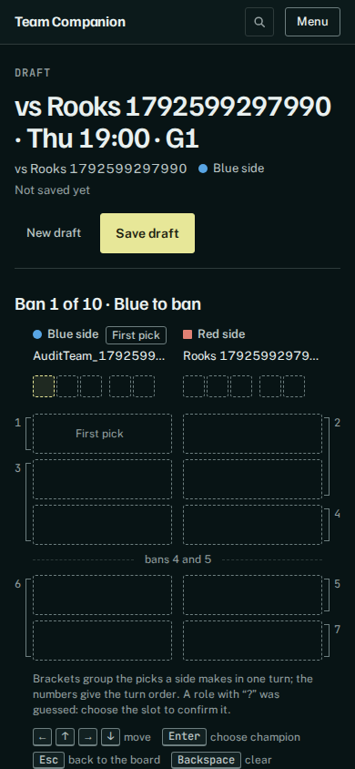
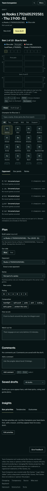
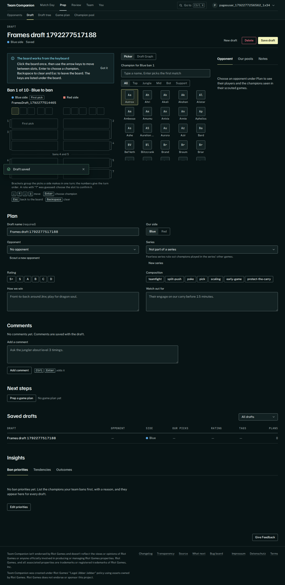
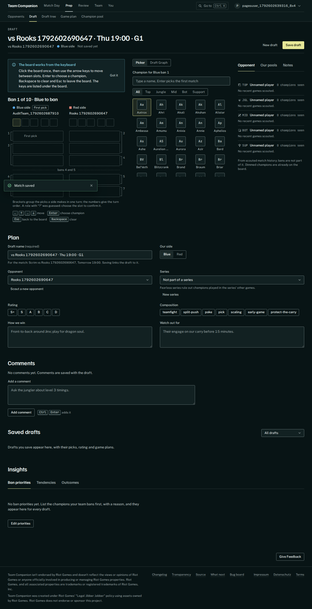
Review picker · PASS
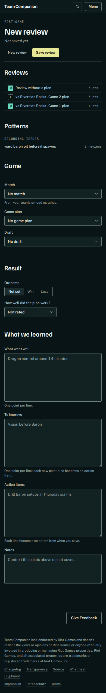
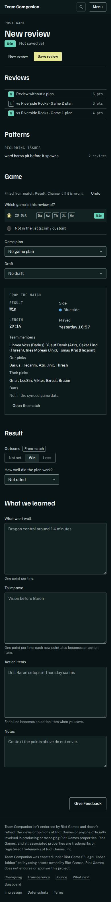
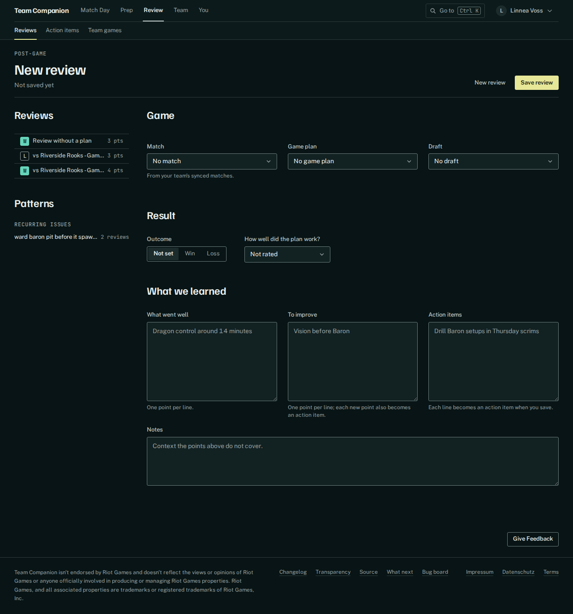
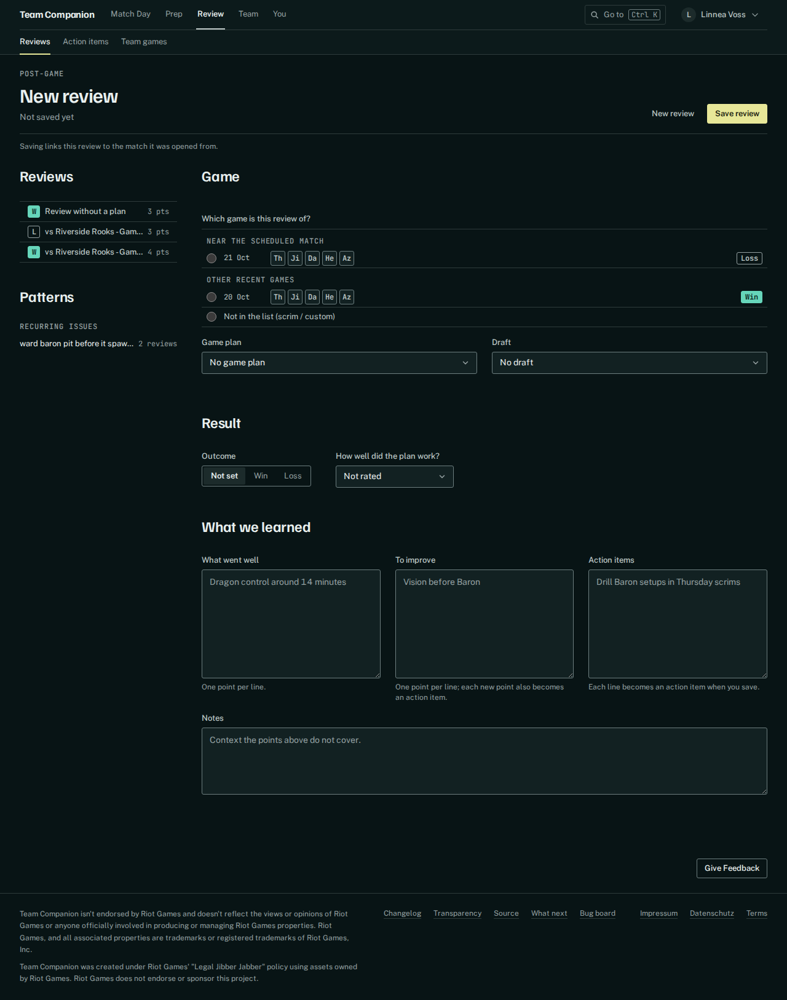
Match page: Review as a team · PASS
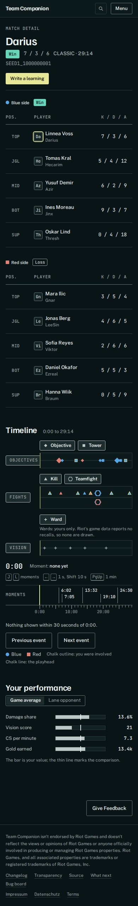
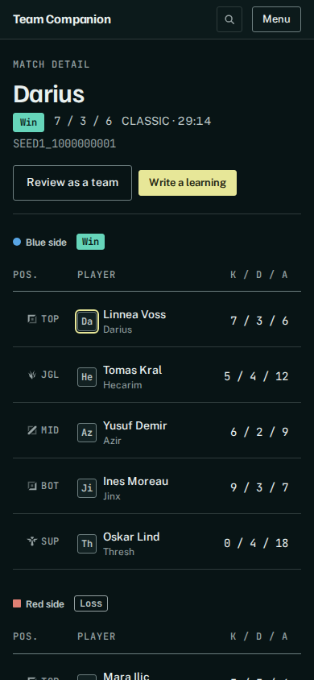
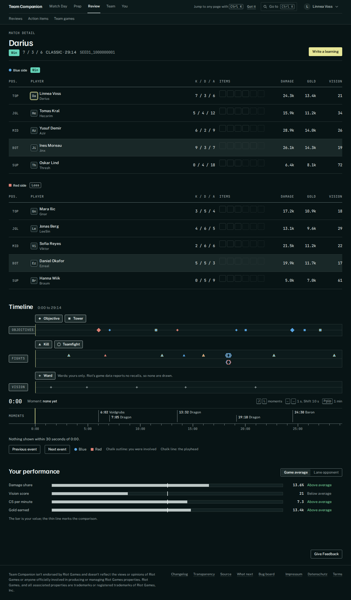
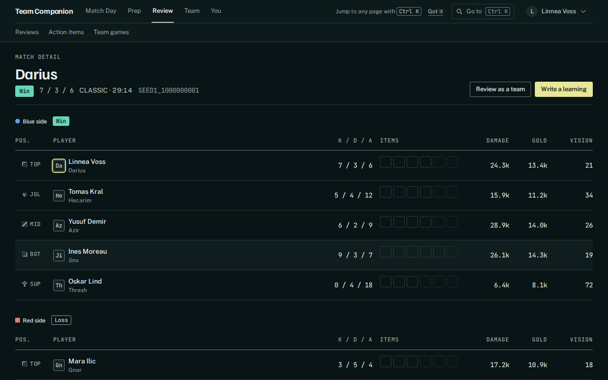